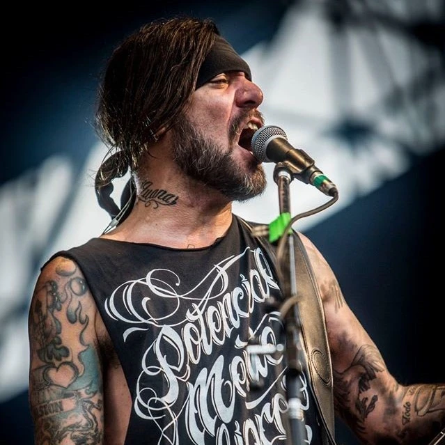

Marcelo Corvalán
Marcelo Gabriel Corvalán, también conocido como Corvata nació en Villa Crespo, Buenos Aires, el 10 de noviembre de 1971. Es un bajista, cantante y compositor argentino que tocó en la banda de groove metal A.N.I.M.A.L. y actualmente en la banda de Nü metal/Punk Rock Carajo.
